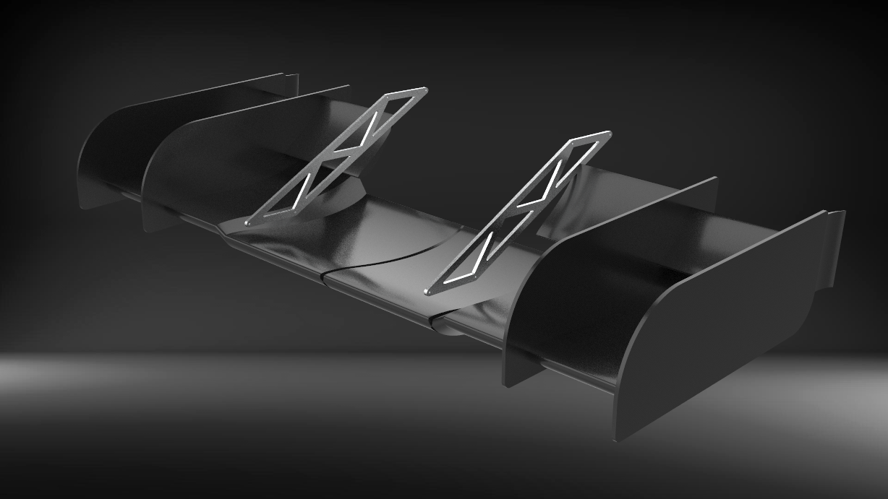

Front Wing Swan Necks
Overview
As an Aerodynamics and Composites Team Member of Penn Electric Racing, a FSAE racing team, I designed the swan necks for a multi-element front wing. The water-jet 6061-T6 aluminium swan necks are designed to sustain the lift and drag forces of the front wing under normal racing conditions, while remaining stiff enough as to not change the pitch of the front wing at high speeds. The swan necks are mounted via tabs (not shown) to the chassis and front wing.
Design Goals
The swan necks were designed using the following criteria:
- Downforce and Drag: the swan necks must sustain loads up to 200lbs with appropriate safety factors
- Weight: the swan necks must weigh less than 1.7lbs, i.e. previous mounting solution.
- Manufacturability: the swan necks must be easily manufacturable, with simple triangulated geometry.
- Crash Compliance: the swan necks must not impede the functionality of the car's impact attenuator system, thus providing safe crash conditions.
Design Overview

Iterative Design Process
The design of the swan neck was guided by mechanical principles and computer simulations. Topology optimization and generative design were used as evaluation tools for the various iterations of the design. This allowed to explore multiple mounting solutions.
Lift and Drag Forces
Results from CFD simulations were used to understand and characterize the downforce and drag experienced by the front wing. This allowed to develop the swan necks as to sustain forces up to 400lbs while keeping the weight under 1.3lbs.

Final Design
The final design weighs 0.6lbs per swan necks, and provides a safety factor margin of 2.0. The position of the mounts reflect both the C-channels in the front wing and proper tab locations on the chassis.

Mounting Tabs
The swan necks are mounted to the chassis via mounting tabs welded directly to the chassis tubes.

Testing
The Strength of the mounting system was tested using FEA under various load cases. Experimental tests are planned to be conducted after the Coronavirus Pandemic.